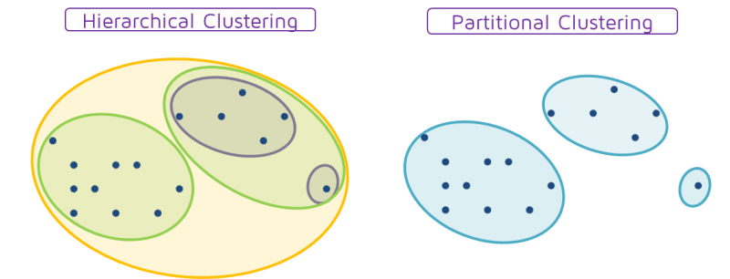
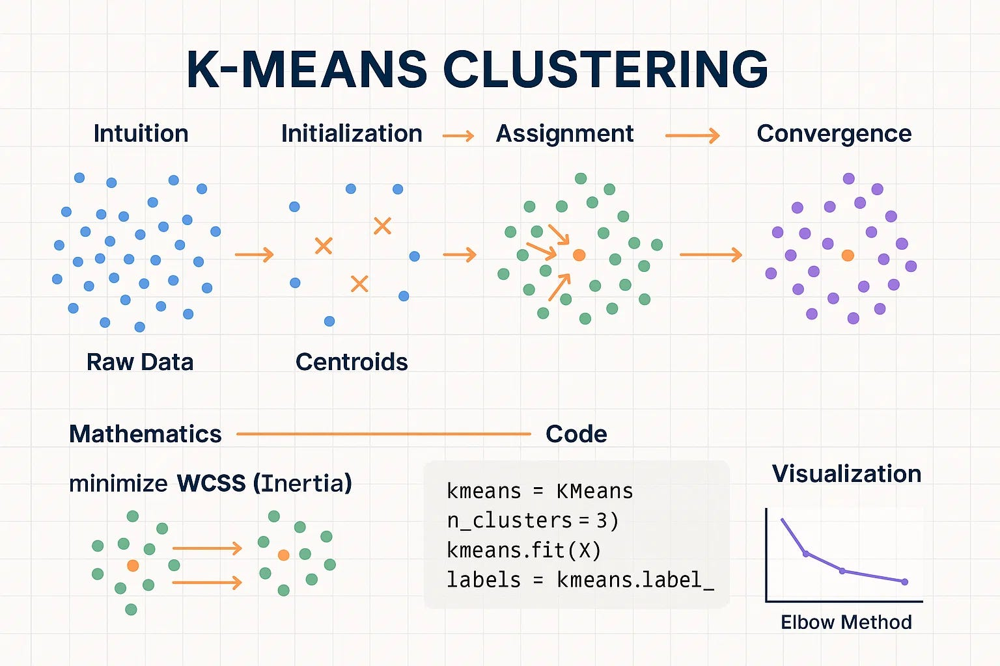
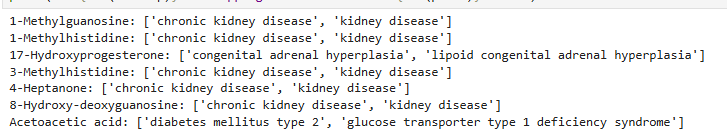
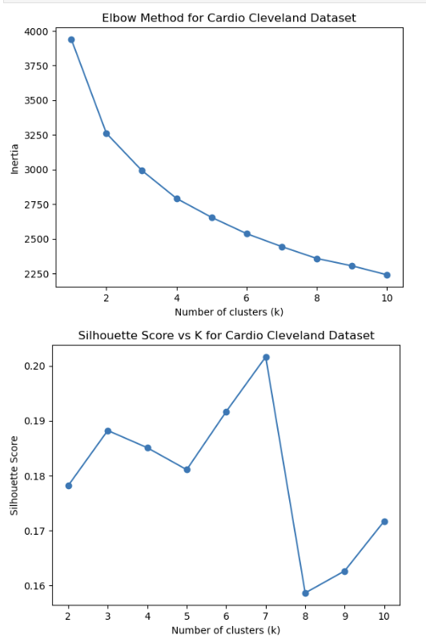
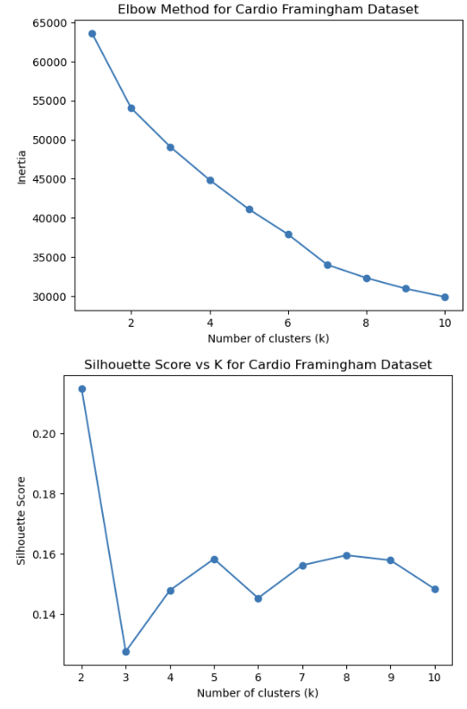
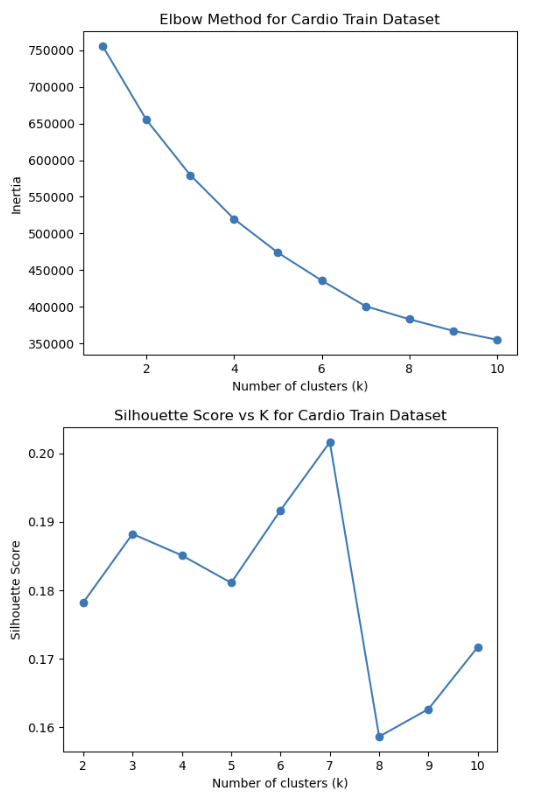
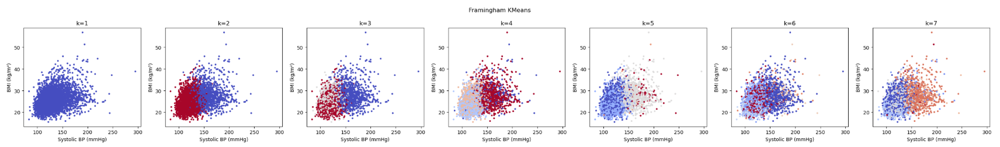
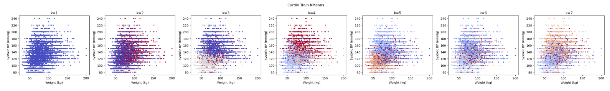
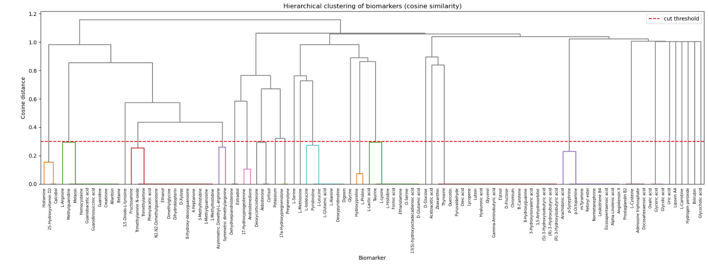

Clustering
(a) Overview
Clustering is an extremely useful unsupervised learning method that provides insight into the similarities and patterns within a dataset. An especially useful aspect of clustering is that the groups attached to data points are not pre-defined, allowing the algorithm to identify natural patterns within the data. Partitional clustering uses a predefined number of clusters (K) to group the data. In order to ensure that the chosen number of clusters most accurately categorizes the data, several evaluation methods can be used, such as the silhouette score, which measures how well a data point fits within its assigned cluster, and the elbow method. The elbow method examines the number of clusters that minimizes the within-cluster sum of squares while avoiding unnecessary redundancy. Alongside partitional clustering is hierarchical clustering, which does not require a pre-specified K value and instead builds clusters through a series of merges or splits.
The choice of distance metric is central to clustering. K-means relies on Euclidean distance to measure how far each point sits from a cluster center, while the hierarchical clustering in this project uses cosine similarity, which compares the direction of each biomarker's pattern of condition associations rather than its raw magnitude. These different distance measures are part of why the two methods reveal different structure in the same biological data.
For this project, clustering can provide valuable information about the similarities and patterns among biomarker data related to kidney disease, cardiovascular disease, and diabetes. For each condition, clustering can show how biomarker levels differ between individuals with positive and negative outcomes. From this, it may be possible to identify biomarkers that are especially prominent within each condition. An especially interesting aspect of clustering is that hierarchical clustering can help reveal overlap in biomarkers across these conditions. Biological data is unlikely to form perfectly separated clusters because biomarker measurements are continuous and rarely fit into clearly defined categories, which also gives an advantage to hierarchical clustering. This makes hierarchical clustering particularly useful for exploring gradual relationships and shared characteristics among conditions. Because biomarkers are the primary focus of this analysis, condition labels were removed before clustering to avoid the model "cheating" by grouping observations based on known diagnoses. Instead, the goal is to observe whether natural biomarker patterns emerge and whether these patterns correspond to the presence or absence of clinically diagnosed health conditions.
Overview Images

Figure 1. Fuertes, T. “Hierarchical Clustering, Using It to Invest.” QuantDare, 22 June 2016, https://quantdare.com/hierarchical-clustering/

Figure 2. Simple ML. “K-Means Clustering Explained: From Intuition to Code and Visualization.” Artificial Intelligence in Plain English, 19 Oct. 2025, https://ai.plainenglish.io/k-means-clustering-explained-from-intuition-to-code-and-visualization-133775129f95
(b) Data Preparation
Data preparation was also an important aspect of clustering. As briefly mentioned above, condition labels were removed to prevent the model from automatically grouping observations by diagnosis, which was not the primary objective. Converting yes/no responses and other categorical variables into numerical values allows the algorithm to calculate distances and similarities between observations. This step is essential because most clustering algorithms, including K-means, rely on mathematical distance calculations and cannot directly work with text values. For these datasets in particular, biomarker measurements must remain numerical and consistent so that they accurately represent biological levels. Numeric data is especially important for biomarker analysis because clustering algorithms group observations based on how similar their biomarker levels are. The actual magnitude of these measurements matters, as higher or lower biomarker concentrations may indicate different biological systems or levels of disease risk. If biomarker values are missing, inconsistent, or stored as text rather than numbers, the algorithm cannot accurately measure the differences between individuals. By cleaning, standardizing, and converting variables into a numerical format, the resulting clusters are more likely to reflect meaningful biological patterns rather than issues introduced during data collection or processing.
Data Sample

Figure 3. Sample of the MarkerDB dataset used for hierarchical clustering.
Cleaned Data Files Used for Clustering
Cardiovascular: cardio_train_cleaned.csv | framingham_cleaned.csv | cleveland_cleaned.csv
Diabetes: diabetes_cleaned.csv | nhanes_diabetes_cleaned.csv | diabetes_uci_cleaned.csv
Kidney: kidney_cleaned.csv | nhanes_kidney_cleaned.csv
MarkerDB: cleaned_markerdb_api.csv
(c) Code
Python was used to implement both K-means clustering and hierarchical clustering. K-means clustering was performed using multiple values of K and evaluated using silhouette scores. Hierarchical clustering was performed using cosine similarity and visualized using dendrograms. The code also contains code for PCA, pairing these two methods together as a way to compare the clustering and the axes involved with the biomarkers.
K-means was run against all datasets as individual conditions first. This was intended to better understand the different biomarkers and how they are associated with disease risk.
Links to the K-means clustering code below:
Hierarchical Clustering on the MarkerDB dataset:
(d) Results
Silhouette Analysis
Individual datasets for the conditions showed a similar pattern in silhouette score (specifically how after k = 2, there is a drop off in silhouette score). However, cardiovascular seemed to be the most interesting.

Figure 4. Silhouette for Cardio Cleveland Dataset.

Figure 5. Silhouette for Cardio Framingham Dataset.

Figure 6. Silhouette for Cardio Training Dataset.
Framingham peaks at k = 2, then drastically drops; this pattern is seen in both the kidney and diabetes datasets, where just two clusters seem to obtain the highest silhouette score. This is an unsurprising result for these datasets, as datasets such as Framingham are built from continuous risk factors (age, blood pressure, cholesterol, etc.). The continuous behavior of the data measures an "overall cardiovascular risk" axis. So for this dataset and those alike, k = 2 captures the low-risk vs high-risk groups. Again, labels containing the diagnosis were removed, so this does well at capturing patterns between those who do have the health condition and those who do not, but it is shown as risk rather than a definitive diagnosis.
The Cleveland and Cardio Training datasets represent a different organization of data. These datasets focus more on categorical / ordinal variables. They look at chest-pain type, thalassemia (a group of blood disorders), cholesterol and glucose as ordinal levels, and other variables alike. Discrete data in biological settings creates combinations of normal and abnormal groups (i.e. high-cholesterol vs low-cholesterol). This explains why a higher number of clusters may be preferred for these datasets, as it captures a variety of phenotype pockets that are not driven by one common axis.
Of course, an obvious pattern throughout applying both elbow and silhouette is the fact that the values found are fairly low (this is also true for the diabetes and kidney datasets). As mentioned before, biological data is rarely able to be split into clean, distinct groups, so these k values lack concrete support of being the optimal choice for clustering. We can also see from the elbow method of all these groups that there is no clear 'elbow' in the plot, but rather a more gradual decline. This reinforces the same conclusion: rather than forming a set of naturally separated groups, the data behaves as a continuous gradient, where each additional cluster reduces inertia by a similar amount instead of capturing a distinct break in the data.
K-Means Clustering Results

Figure 7. Framingham K-means clustering visualization.

Figure 8. Cardio Training K-means clustering visualization.
K-means clustering was evaluated using a range of k values (1–7), and clusters were plotted against the cardiovascular Framingham dataset and Training dataset. Framingham reveals an expected result at k = 2: there is a clear divide between high and low blood pressure, while BMI affects the divide less so. In contrast, the Cardio Training dataset shows splits in the data, as it is discrete. The most interesting aspect compared with the Framingham data is how there is no visible split; data points along weight and blood pressure are not strictly divided. This makes sense given our silhouette indicated this dataset requires a higher number of clusters to accurately represent the categorization of these data points. Across the several k values, at k = 7 there is still a split within the Framingham data between high and low blood pressure. However, there is also more of a split in the Cardio Training set, again a heavier divide by blood pressure. Even so, data points are scattered, and it is likely that even 7 clusters is not enough to perfectly capture this data. Because it is categorical and clustering more on discrete phenotypes, the actual number of optimal clusters is likely closer to the number of phenotypes being examined in the data.
Hierarchical Clustering Results

Figure 9. Hierarchical clustering dendrogram using cosine similarity.
Hierarchical clustering was performed using a pivot table (conditions x biomarkers). It utilized cosine distance, representing each biomarker as a vector of condition associations. Thus, cosine similarity measured which conditions a biomarker is linked to. The resulting tree is shown, where the y-axis is the cosine distance at which biomarkers merge. Low merges indicate closely related disease associations, while high merges show unrelated ones. The overall structure shows that the vast majority of biomarkers merge at a high distance. This means that most biomarkers are associated with a distinct, condition-specific set of diseases. Meaningful similarity is concentrated in a small number of tight, low-distance clusters (those below the threshold line). These are the biomarkers that are especially informative, as they indicate strong overlap between the three conditions of interest.
Cutting the tree at this threshold suggests approximately five main biomarker groups, which correspond to recognizable biochemical families (renal, steroid, amino-acid, carbohydrate, and lipid). This means hierarchical clustering points toward a richer k (around k = 5) than the k = 2 that k-means favored on the continuous patient data.
Comparison of Partitional and Hierarchical Clustering
Partitional clustering (k-means) was mainly applied to the continuous patient datasets, where the dominant structure is a single severity gradient. Because k-means must force the data into round groups, it tended to split this gradient roughly in half (best k = 2 for most datasets), producing broad "lower-risk vs higher-risk" partitions with weak separation (low silhouette). It answered "where does the population divide?" but could not show finer internal structure. For discrete structured data, k-means grouped biomarkers based on phenotypes, which did reveal how these datasets can combine into distinct subgroups. For these, the best k value was found to be fairly large (at least 7) to have meaningful separation.
Hierarchical clustering was applied to the sparse biomarker and condition data, where it revealed a nested structure that a flat partition would miss: a few tight, biologically coherent clusters (renal, steroid, amino-acid, carbohydrate, lipid) standing out against a large background of condition-specific indicators. By not forcing a preset k, it exposed both the strong local groups and the fact that most biomarkers don't overlap, which is information k-means would have hidden by assigning everything to a cluster. However, both agreed that the cluster separation is overall weak, with structure concentrated in a small number of distinct groups rather than evenly spread across the data.
(e) Conclusions
Across both methods, the central lesson seems to be that the data underlying diabetes and kidney / cardiovascular conditions does not separate into clean, distinct groups. Partitional clustering of the continuous datasets found that splitting the data into lower-risk and higher-risk created more distinct groupings. In a clinical sense this is extremely useful, as it gives specific indicators where, if there are elevated or decreased levels, risk groups begin to differ. However, the silhouette method also failed to support strong, distinct groups, instead showing how these conditions exist on a spectrum of severity; certain levels of one indicator do not automatically mean a patient will develop diabetes, CKD, or cardiovascular disease. Rather, it supports how many factors and biological systems play a significant role in the mechanisms that lead to the development of these diseases.
The clustering results are consistent with this progression in two ways. First, patient data formed a continuous severity gradient rather than discrete groups, as would be expected if these conditions represent stages of a single underlying process rather than separate states. Second, hierarchical clustering of biomarkers isolated a renal group whose members double as established cardiovascular risk markers. This is a molecular overlap that represents a biochemical bridge through which kidney dysfunction may carry diabetic risk forward into cardiovascular disease. However, clustering alone cannot prove a causal or directional sequence of conditions; rather, it reveals interesting patterns that support recurring indicators of disease development that lead to other health conditions.